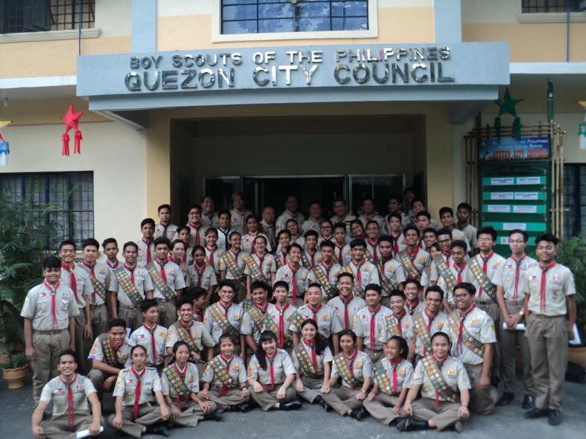
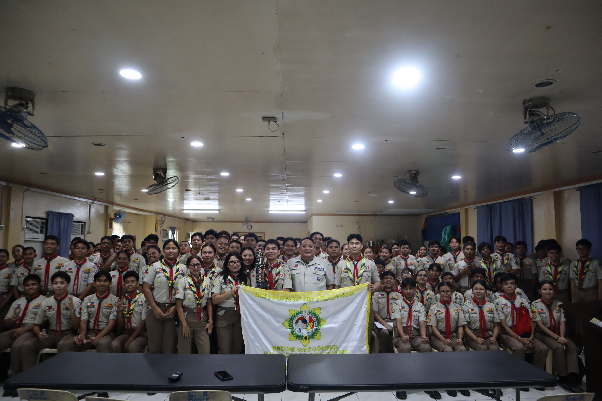

The official organization of Eagle Scouts within the Quezon City Council of the Boy Scouts of the Philippines.
We, the Quezon City Council - Eagle Scout Association, imploring the aid of the Almighty Lord, and in order to foster unity and camaraderie through peace, support and defend the constitution and the duly constituted government of the Republic of the Philippines, promote peace, brotherhood, and enhance the general welfare of its members, do hereby approve, adopt and promulgate this Constitution.
QCC-ESA was originally established in 2012 as the Eagle Scout Organization of Quezon City (ESOQC) through the initiative of Raoul Abraham Jeuel C. Roldan, who served as its founding president. The organization was created to unite Eagle Scouts of the Quezon City Council and strengthen their participation in leadership and community service programs.
In September 2021, the Quezon City Council Eagle Scout Association celebrated its 9th Founding Anniversary through the 1st to 3rd Episode of the President’s Podcast, followed by a raffle of exciting prizes. During the celebration, the history and development of the organization were revisited, including the beginnings of ESOQC and its eventual transition into the Quezon City Council Eagle Scout Association. Although the discussion documented important parts of the organization’s history, no video recording or livestream archive of the episode was preserved.
As the organization expanded in membership and activities, it transitioned into the Quezon City Council Eagle Scout Association (QCC-ESA) in 2017, reflecting its broader scope, strengthened organizational structure, and long-term objectives. Enrico Rafael B. Patulan served as the founding president of QCC-ESA in its present organizational form. By January 2018, the organization was first publicly identified online and referred to as QCC-ESA, representing the Eagle Scouts of the Quezon City Council.
To unite and empower Eagle Scouts of the Quezon City Council through brotherhood, leadership development, service, civic responsibility, and meaningful engagement in the Scouting Movement and the community.
A united community of Eagle Scouts committed to leadership, brotherhood, service, and the development of responsible citizens who uphold the ideals of Scouting.

The Eagle Scout Organization of Quezon City (ESOQC) was established to unite Eagle Scouts across the six congressional districts of Quezon City, strengthen fellowship, and promote leadership and community service in support of the Boy Scouts of the Philippines.

The Eagle Scout Organization of Quezon City (ESOQC) was reorganized and officially transitioned into the Quezon City Council Eagle Scout Association (QCC-ESA), strengthening district coordination, organizational governance, and Eagle Scout engagement across Quezon City.

Today, the association continues to grow and strengthen its mission, with more than 100 active Eagle Scouts who remain committed to supporting the organization. Through leadership programs, fellowship, and community service initiatives, QCC-ESA continues to empower its members and inspire the next generation of youth leaders and community builders in Quezon City.